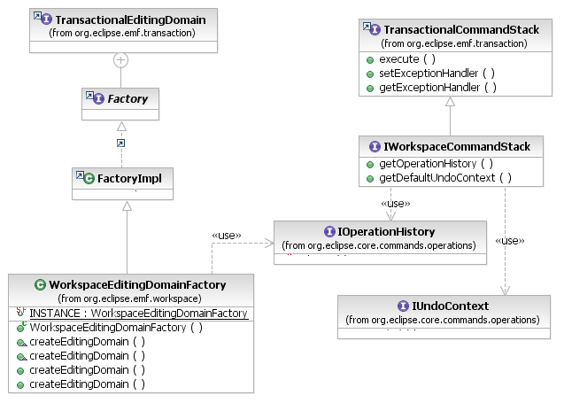

Integration with the Eclipse Operation History is provided by a specialization, not exactly of the TransactionalEditingDomain, but of the TransactionalCommandStack. The WorkspaceEditingDomainFactory initializes a transactional editing domain with an implementation of the IWorkspaceCommandStack interface. This command stack delegates to an IOperationHistory for the execution of EMF Commands. Transactional editing domains that use this command stack implementation are casually referred to as workspace editing domains.

[as SVG]
To use a workspace editing domain, use the factory to create an instance on the operation history of your choice:
ResourceSet rset = getResourceSet(); // access some hypothetical resource set
IOperationHistory history = getOperationHistory(); // an operation history
TransactionalEditingDomain domain = WorkspaceEditingDomainFactory.INSTANCE
.createEditingDomain(rset, history);
// begin working with the editing domain
Alternatively, register an editing domain on the org.eclipse.emf.transaction.editingDomains extension point using the WorkspaceEditingDomainFactory:
<extension point="org.eclipse.emf.transaction.editingDomains">
<domain> id="org.eclipse.example.MyDomain"
factory="org.eclipse.emf.workspace.WorkspaceEditingDomainFactory"/>
</extension>
The above example will result in a workspace editing domain with a default resource set and a command stack that delegates to the Eclipse Workbench's operation history. This is what most applications need. However, by providing a custom factory extending the default implementation, the resource set, operation history, and editing domain can all be customized if necessary.
In all respects, a workspace editing domain and command stack function much as a regular transactional editing domain and its command stack do. However, the execution of Commands on the workspace command stack is only really provided for compatibility with code (such as in the EMF property sheet) that expects to work with commands. Applications are encouraged to execute operations directly on the operation history, to take full advantage of the undo context and related capabilities.
Copyright (c) 2006, 2007 IBM Corporation and others. All Rights Reserved.